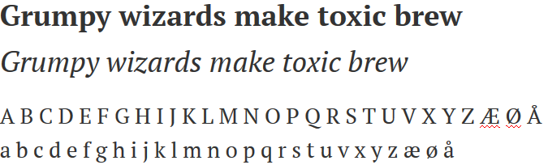

Primær font i titler og tekst for web er Google webfont PT Sans (Font family: PT Sans, helvetica, sans-serif;).
I logo benyttes fonten Calibri evt Open Sans (se spesifikasjoner i kapittel om logo og header).
Som serif-font benyttes Google webfont PT Serif.
For bruk i kanaler som ikke er egnet for webfonter, for eksempel epost, tillates Arial som erstatningsfont, og likeledes Times New Roman, dersom man benytter en serif-font i utgangspunktet.
Vi vektlegger hensyn til god kontrast og lesbarhet på skjerm. Bakgrunnsfarge for tekst skal fortrinnsvis være hvit. I tillegg benyttes lyse gråtoner og pastellvarianter av fargepaletten for å skille sidekomponenter. Tekstfarge: Svart (evt mørke blåtoner/gråtoner med god lesekontrast). Alternativt hvit tekst på mørk bakgrunn.
Calibri benyttes som standardfont i Trondheim kommunes programvare for epost og dokumentproduksjon. Se for øvrig avsnitt om erstatningsfonter.
